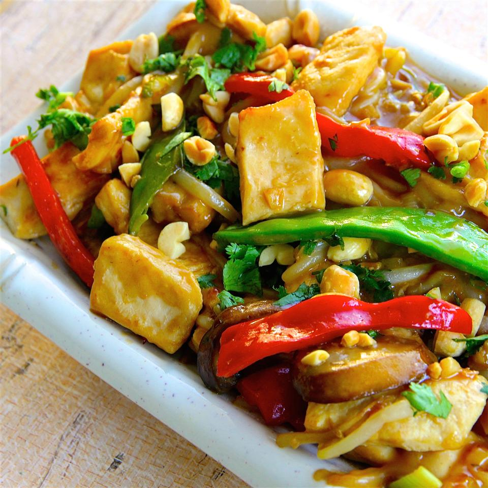

Thai Peanut Chicken Lo Mein

A Chinese-style dish with an assortment of vegetables mixed with peanuts sauce to add contrast to the salty-esque flavor the soy sauce provides!
A great dish for kids to try!
Ingredients
- 7 ounces Chinese-style chow mein stir-fry noodles
- Peanut Sauce
- 1/4 cup soy sauce
- 3 tablespoons creamy peanut butter
- 3 tablespoons vegetable oil
- 2 tablespoons white sugar
- 4 teaspoons rice wine vingear
- 4 teaspoons sesame oil
- Stir-Fry
- vegetable oil, divided
- 2 teaspoons sesame oil, divided
- 3 skinless, boneless chicken breast halves, cut into cubes
- 1 tablespoon minced garlic
- 1 tablespoon minced fresh ginger root
- 2 cups thinly sliced cremini mushrooms
- 2 cups bean sprouts
- 1/2 cup chopped green onion
- 1/4 cup chopped cilantro
Steps
- Bring 2 quarts lightly salted water to a boil. Cook chow mein in the boiling water, stirring occasionally, until cooked through but firm to the bite, about 12 minutes; drain.
- Whisk soy sauce, peanut butter, 4 teaspoons vegetable oil, sugar, vingear, and 4 teaspoons sesame oil together in a bowl until smooth.
- Heat 2 teaspoons vegetable oil and 1 teaspoon sesame oil in a large skillet over medium-high heat. Saute chicken, garlic, and ginger in hot oil until chicken is no longer pink in the center, 5 to 10 minutes. Remove chicken mixture with a slotted spoon to a bowl, retaining drippings in the skillet.
- Heat an additional 1 tablespoon vegetable oil and 1 teaspoon sesame oil in the skillet with the drippings; saute mushrooms until fragrant, 15 to 30 seconds.
- Return the chicken to the skillet; add drained chow mein noodles, bean sprouts, and green onion. Toss mixture to distribute chicken and vegetables throughout the noodles. Drizzle peanut sauce over the noodles and toss to coat; cook until sauce isarmed, about 1 minute. Remove skillet from heat and garnish with cilantro.